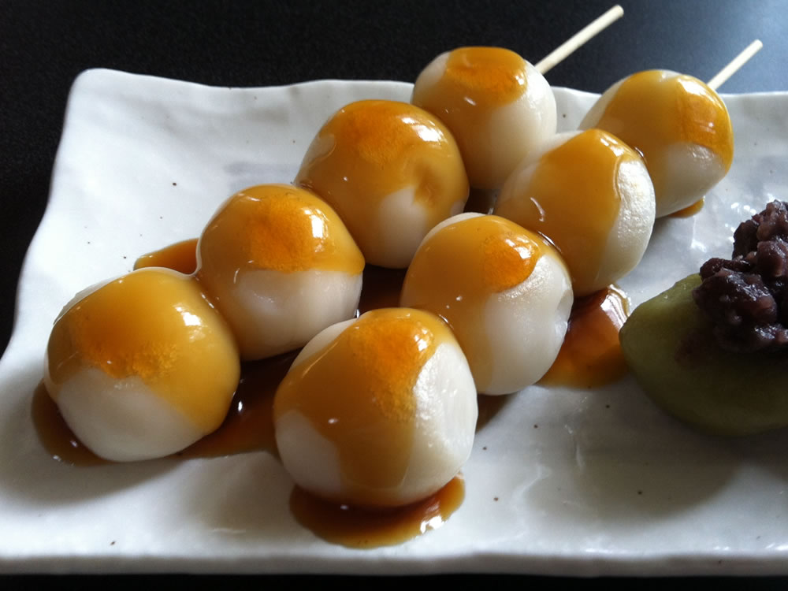
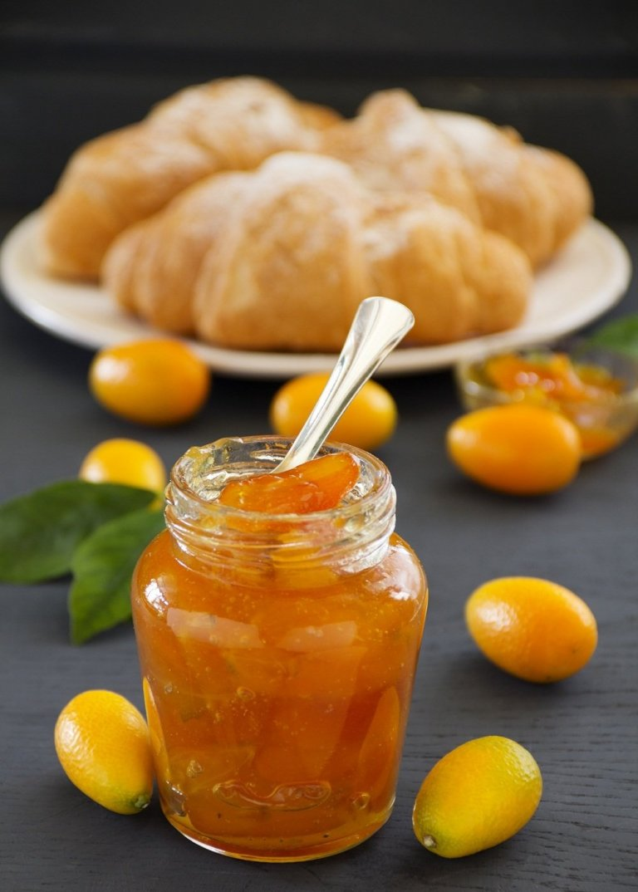
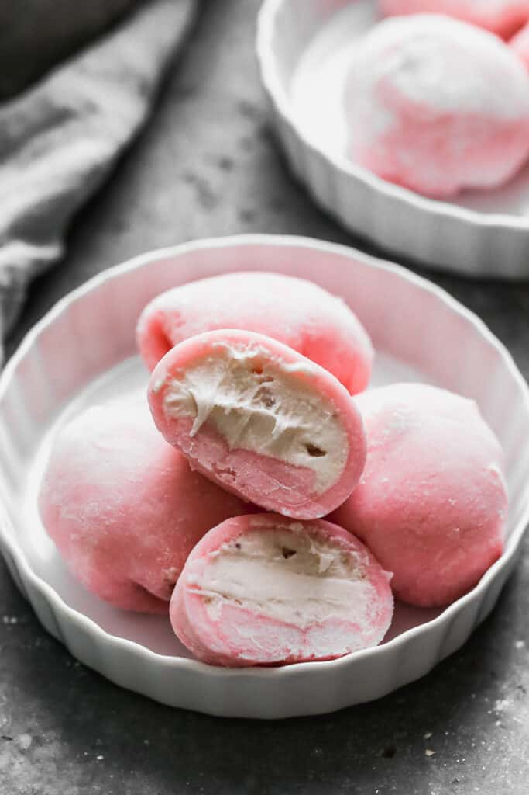
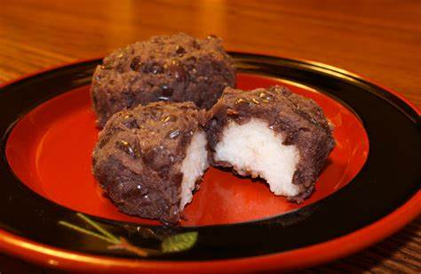

|

|
Dango
Les dango font partie des desserts sucrés traditionnels japonais. Ils consistent en une
brochette de trois à cinq boulettes de farine de riz gluant appelés mochi, natures ou
aromatisés, parfois surmontés d’une garniture ou nappé de sauce.
|
6.5 € |

|
Sablés sakura
De délicieux petits biscuits élégants aux subtils arômes de sakura. Vivez un peu la fameuse
saison des cerisiers japonais.
|
5.5 € |

|
Daigaku Imo
Un dessert traditionnel japonais : des cubes de patates douces frits avec un caramel au miso.
|
7 € |
|

|
Kumquats confits
Kumquats confits.
|
5 € |
|

|
Mochi
Les Mochi sont des gâteaux de riz japonais avec un centre de crème glacée dans une pâte de riz
douce, légèrement moelleuse et sucrée.
|
8.5 € |
|

|
Ohagi
L'ohagi est un wagashi, une pâtisserie traditionnelle japonaise automnale, faite de riz et de
pâte de haricots rouges.
|
4 € |